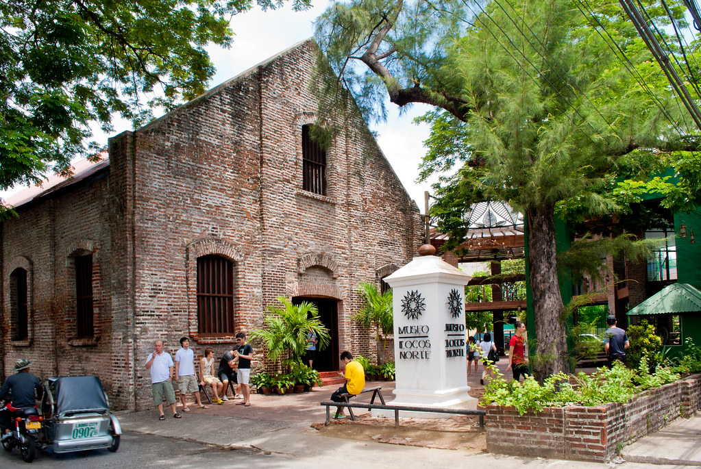

Museo Ilocos
The building was a former Tabacalera Building or tobacco factory, a historical landmark standing within the museum. The old building was the Administration Center of the Tobacco Monopoly in Ilocos Norte during the Spanish times. One highlight of the museum is tobacco, the main product of the province. It exhibits some old tools used in farming and fishing - the locals' main livelihood; typical Ilocano house furnishings; and framed pictures of old Ilocos. It also showcases Rattan-woven handicrafts, Traditional Ilocano clothing (Abel-Iloko cloths, and typical Ilocano costumes) and artifacts across the province. The Museum is open on Monday-Saturday from 9AM to 5PM.